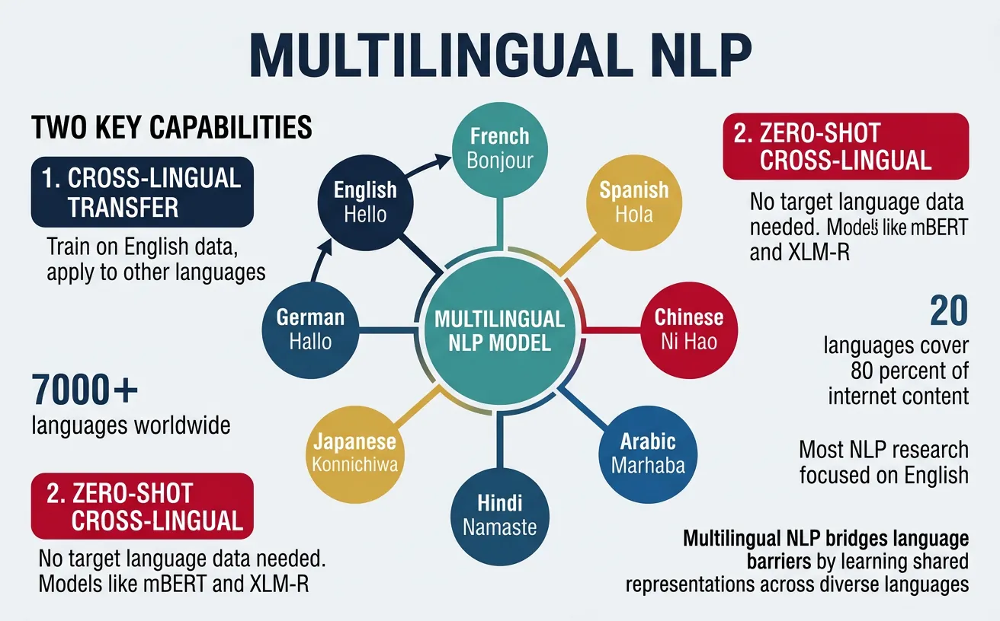
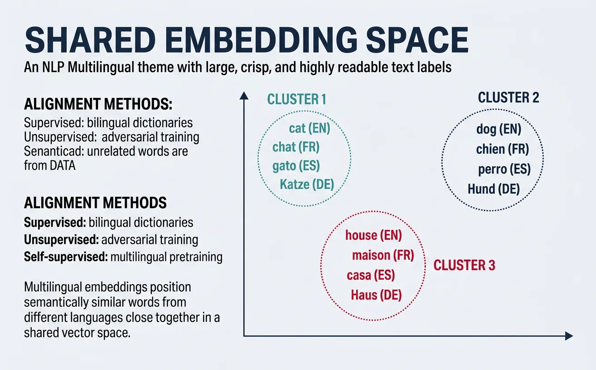
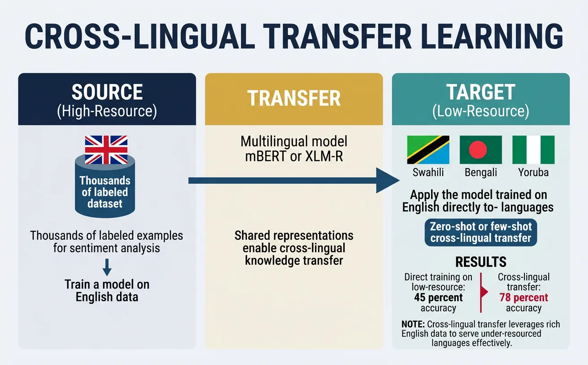
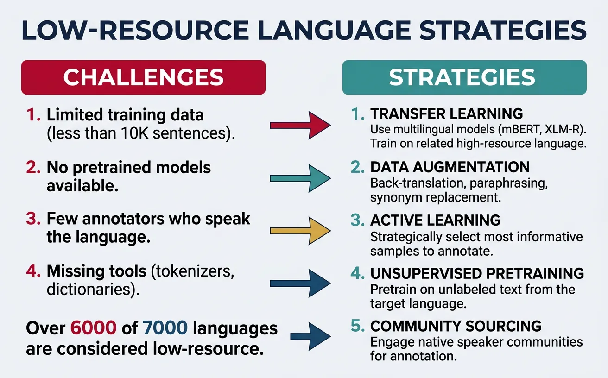
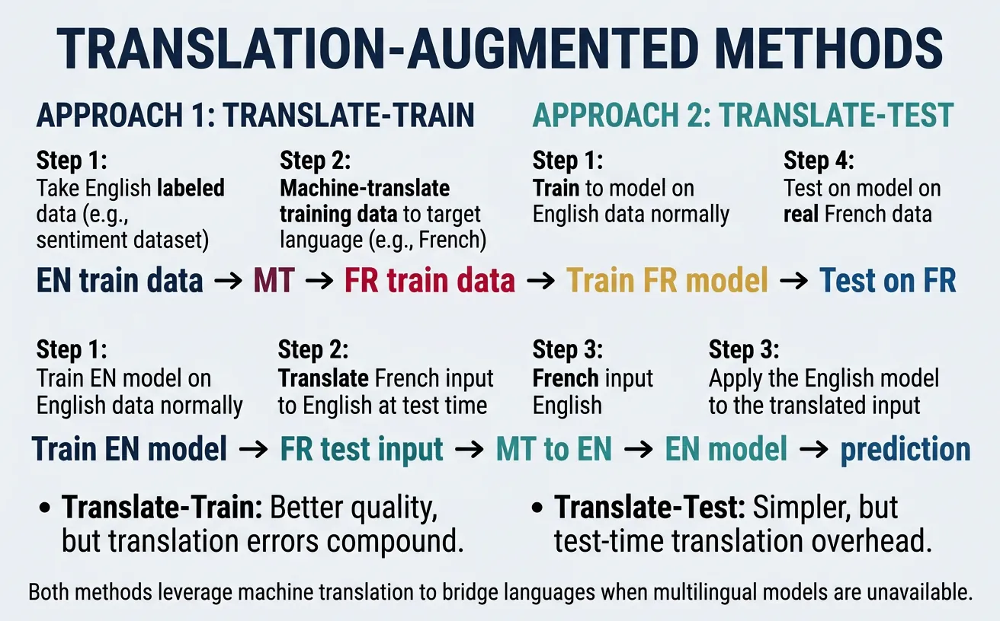

Introduction to Multilingual NLP
Multilingual NLP enables building systems that understand and generate text in multiple languages. Cross-lingual transfer allows leveraging resources from high-resource languages to benefit low-resource ones.

Key Insight
Multilingual models learn language-agnostic representations that capture shared semantic structures across languages, enabling zero-shot transfer without any target-language training data.
NLP Mastery
NLP Fundamentals & Linguistic Basics
Phonology, morphology, syntax, semantics, pragmaticsTokenization & Text Cleaning
Subword tokenization, BPE, stopwords, normalizationText Representation & Feature Engineering
Bag-of-words, TF-IDF, feature extraction, vectorizationWord Embeddings
Word2Vec, GloVe, FastText, embedding spaces, analogiesStatistical Language Models & N-grams
Probability chains, smoothing, perplexity, Markov modelsNeural Networks for NLP
Feedforward nets, backpropagation, activation functionsRNNs, LSTMs & GRUs
Sequence modeling, vanishing gradients, gated architecturesTransformers & Attention Mechanism
Self-attention, multi-head attention, positional encodingPretrained Language Models & Transfer Learning
BERT, RoBERTa, fine-tuning, feature extractionGPT Models & Text Generation
Autoregressive generation, prompting, GPT architectureCore NLP Tasks
NER, POS tagging, sentiment analysis, text classificationAdvanced NLP Tasks
Question answering, summarization, machine translationMultilingual & Cross-lingual NLP
mBERT, XLM-R, zero-shot transfer, language diversityEvaluation, Ethics & Responsible NLP
BLEU, ROUGE, bias detection, fairness, responsible AINLP Systems, Optimization & Production
Model serving, quantization, distillation, deploymentCutting-Edge & Research Topics
LLMs, multimodal NLP, reasoning, emerging researchMultilingual Embeddings
Multilingual embeddings create shared vector spaces where semantically similar words and sentences from different languages are positioned close together. This enables models to process text from any supported language using the same underlying representation, forming the foundation for cross-lingual transfer learning.
The key insight behind multilingual embeddings is that human languages, despite surface-level differences in grammar and vocabulary, share deep semantic structures. Concepts like "love," "family," and "science" exist across cultures, and multilingual models learn to map these concepts to similar regions in embedding space regardless of the source language.

Aligned Word Embeddings
Aligned word embeddings create cross-lingual word representations by learning a mapping between monolingual embedding spaces. The most common approaches use bilingual dictionaries or parallel corpora to learn projection matrices that align embeddings from different languages into a shared space.
The alignment process typically involves learning an orthogonal transformation matrix W that minimizes the distance between source language embeddings X and target language embeddings Y: argmin||WX - Y||. This preserves the internal structure of each language's embedding space while enabling cross-lingual comparisons.
# Cross-lingual word embedding alignment using MUSE approach
import numpy as np
from sklearn.preprocessing import normalize
def load_embeddings(path, max_vocab=50000):
"""Load word embeddings from file"""
embeddings = {}
with open(path, 'r', encoding='utf-8') as f:
for i, line in enumerate(f):
if i >= max_vocab:
break
parts = line.strip().split()
word = parts[0]
vector = np.array([float(x) for x in parts[1:]])
embeddings[word] = vector
return embeddings
def build_seed_dictionary(en_embeddings, fr_embeddings, bilingual_dict):
"""Build training pairs from bilingual dictionary"""
src_vectors = []
tgt_vectors = []
for en_word, fr_word in bilingual_dict:
if en_word in en_embeddings and fr_word in fr_embeddings:
src_vectors.append(en_embeddings[en_word])
tgt_vectors.append(fr_embeddings[fr_word])
return np.array(src_vectors), np.array(tgt_vectors)
def procrustes_align(src_vectors, tgt_vectors):
"""Learn orthogonal alignment matrix using Procrustes"""
# Normalize vectors
src_norm = normalize(src_vectors)
tgt_norm = normalize(tgt_vectors)
# Compute SVD of correlation matrix
M = tgt_norm.T @ src_norm
U, S, Vt = np.linalg.svd(M)
# Optimal orthogonal transformation
W = U @ Vt
return W
# Example usage
print("Cross-lingual embedding alignment")
print("=" * 50)
# Simulate embeddings for demonstration
np.random.seed(42)
en_embed = {'hello': np.random.randn(300), 'world': np.random.randn(300),
'cat': np.random.randn(300), 'dog': np.random.randn(300)}
fr_embed = {'bonjour': np.random.randn(300), 'monde': np.random.randn(300),
'chat': np.random.randn(300), 'chien': np.random.randn(300)}
# Bilingual dictionary
dictionary = [('hello', 'bonjour'), ('world', 'monde'),
('cat', 'chat'), ('dog', 'chien')]
src, tgt = build_seed_dictionary(en_embed, fr_embed, dictionary)
W = procrustes_align(src, tgt)
print(f"Alignment matrix shape: {W.shape}")
print(f"Is orthogonal: {np.allclose(W @ W.T, np.eye(300))}")Alignment Methods
Supervised alignment uses bilingual dictionaries to learn mappings, while unsupervised alignment (like MUSE) uses adversarial training to align embedding spaces without any bilingual signal, making it applicable to language pairs without parallel resources.
Multilingual BERT (mBERT)
Multilingual BERT is a single BERT model trained on Wikipedia text from 104 languages using the same masked language modeling objective as monolingual BERT. Despite never seeing explicit cross-lingual signals during training, mBERT learns remarkably effective multilingual representations that enable zero-shot cross-lingual transfer.
The model uses a shared WordPiece vocabulary of 110,000 tokens, which naturally creates overlap between languages that share scripts (e.g., Latin alphabet languages) while also learning subword representations for languages with unique scripts. This shared vocabulary is crucial for enabling cross-lingual representations.
# Using Multilingual BERT for cross-lingual encoding
from transformers import BertTokenizer, BertModel
import torch
import torch.nn.functional as F
# Load multilingual BERT
tokenizer = BertTokenizer.from_pretrained('bert-base-multilingual-cased')
model = BertModel.from_pretrained('bert-base-multilingual-cased')
model.eval()
def encode_text(text, tokenizer, model):
"""Encode text using mBERT"""
inputs = tokenizer(text, return_tensors='pt', padding=True, truncation=True)
with torch.no_grad():
outputs = model(**inputs)
# Use [CLS] token embedding as sentence representation
return outputs.last_hidden_state[:, 0, :]
# Example: Encode same concept in different languages
texts = {
'English': 'I love machine learning.',
'Spanish': 'Me encanta el aprendizaje automático.',
'French': 'J\'adore l\'apprentissage automatique.',
'German': 'Ich liebe maschinelles Lernen.',
'Chinese': '????????'
}
print("Multilingual BERT Cross-lingual Encoding")
print("=" * 50)
embeddings = {}
for lang, text in texts.items():
embeddings[lang] = encode_text(text, tokenizer, model)
print(f"{lang}: '{text}'")
# Compute cosine similarities
print("\nCross-lingual Cosine Similarities:")
languages = list(texts.keys())
for i, lang1 in enumerate(languages):
for lang2 in languages[i+1:]:
sim = F.cosine_similarity(embeddings[lang1], embeddings[lang2])
print(f" {lang1} - {lang2}: {sim.item():.4f}")mBERT's Cross-lingual Emergence
Research has shown that mBERT's cross-lingual abilities emerge spontaneously without explicit cross-lingual training. Key factors include: (1) shared subword vocabulary creating lexical overlap, (2) similar sentence structures across languages activating similar attention patterns, (3) deep transformer layers learning abstract, language-agnostic features. Studies show mBERT achieves 70-80% of supervised performance in zero-shot NER and POS tagging across many language pairs.
XLM-RoBERTa
XLM-RoBERTa (XLM-R) significantly improves upon mBERT by training on 2.5TB of filtered CommonCrawl data in 100 languages, compared to mBERT's Wikipedia-only training. The model uses a larger vocabulary (250,000 tokens) and removes the next sentence prediction objective, following RoBERTa's approach.
A key innovation of XLM-R is its sampling strategy that addresses the "curse of multilinguality"—the phenomenon where adding more languages to a fixed-capacity model hurts performance on each individual language. XLM-R uses exponential smoothing of language sampling probabilities to better balance high-resource and low-resource languages during training.
# XLM-RoBERTa for multilingual text classification
from transformers import XLMRobertaTokenizer, XLMRobertaForSequenceClassification
from transformers import Trainer, TrainingArguments
import torch
from torch.utils.data import Dataset
class MultilingualDataset(Dataset):
def __init__(self, texts, labels, tokenizer, max_length=128):
self.encodings = tokenizer(texts, truncation=True, padding=True,
max_length=max_length, return_tensors='pt')
self.labels = torch.tensor(labels)
def __getitem__(self, idx):
item = {key: val[idx] for key, val in self.encodings.items()}
item['labels'] = self.labels[idx]
return item
def __len__(self):
return len(self.labels)
# Load XLM-RoBERTa
tokenizer = XLMRobertaTokenizer.from_pretrained('xlm-roberta-base')
model = XLMRobertaForSequenceClassification.from_pretrained(
'xlm-roberta-base',
num_labels=3 # Positive, Negative, Neutral
)
# Example multilingual sentiment data
train_texts = [
"This movie is fantastic!", # English - Positive
"Cette film est terrible.", # French - Negative
"Der Film war okay.", # German - Neutral
"¡Me encanta esta película!", # Spanish - Positive
"????????", # Chinese - Negative
]
train_labels = [2, 0, 1, 2, 0] # 0: Negative, 1: Neutral, 2: Positive
# Create dataset
train_dataset = MultilingualDataset(train_texts, train_labels, tokenizer)
print("XLM-RoBERTa Multilingual Classification")
print("=" * 50)
print(f"Model: xlm-roberta-base")
print(f"Training samples: {len(train_dataset)}")
print(f"Languages: English, French, German, Spanish, Chinese")
# Inference example
model.eval()
test_texts = [
"Great product!", # English
"Produit horrible!", # French
"Tolles Produkt!", # German
]
with torch.no_grad():
inputs = tokenizer(test_texts, return_tensors='pt', padding=True, truncation=True)
outputs = model(**inputs)
predictions = torch.argmax(outputs.logits, dim=-1)
labels_map = {0: 'Negative', 1: 'Neutral', 2: 'Positive'}
print("\nZero-shot Predictions (before fine-tuning):")
for text, pred in zip(test_texts, predictions):
print(f" '{text}' ? {labels_map[pred.item()]}")XLM-R vs mBERT Performance
XLM-R outperforms mBERT by 13-23% average accuracy on cross-lingual NLI (XNLI) and by 3-10% on named entity recognition across languages. The performance gap is especially pronounced for low-resource languages, where XLM-R's larger training corpus provides significant benefits.
Cross-lingual Transfer Learning
Cross-lingual transfer learning enables models trained on data from one language (typically a high-resource language like English) to perform well on other languages without target-language training data. This is particularly valuable for the vast majority of the world's ~7,000 languages that lack labeled NLP datasets.
The effectiveness of cross-lingual transfer depends on several factors: linguistic similarity between source and target languages, the quality of multilingual representations, and the nature of the task. Syntactic tasks (like POS tagging) transfer better between related languages, while semantic tasks (like sentiment analysis) often transfer more broadly.

Zero-shot Cross-lingual Transfer
Zero-shot cross-lingual transfer involves training a model entirely on source language data and evaluating directly on the target language without any target language examples. This works because multilingual models encode text from different languages into a shared semantic space where similar meanings cluster together.
The typical workflow involves: (1) fine-tuning a multilingual model on English labeled data, (2) applying the fine-tuned model directly to other languages during inference. Despite the simplicity of this approach, it achieves surprisingly strong results, often reaching 70-90% of supervised target-language performance.
# Zero-shot cross-lingual named entity recognition
from transformers import AutoTokenizer, AutoModelForTokenClassification
from transformers import pipeline
import torch
# Load multilingual NER model (trained on English)
model_name = "xlm-roberta-large-finetuned-conll03-english"
tokenizer = AutoTokenizer.from_pretrained(model_name)
model = AutoModelForTokenClassification.from_pretrained(model_name)
# Create NER pipeline
ner_pipeline = pipeline("ner", model=model, tokenizer=tokenizer,
aggregation_strategy="simple")
# Test on multiple languages (zero-shot transfer)
test_sentences = {
'English': "Barack Obama was born in Hawaii and became president.",
'German': "Angela Merkel war Bundeskanzlerin von Deutschland.",
'Spanish': "Gabriel García Márquez nació en Colombia.",
'French': "Emmanuel Macron est le président de la France.",
'Dutch': "Mark Rutte is de premier van Nederland."
}
print("Zero-shot Cross-lingual NER")
print("=" * 50)
for lang, sentence in test_sentences.items():
print(f"\n{lang}: {sentence}")
entities = ner_pipeline(sentence)
for ent in entities:
print(f" ? {ent['word']}: {ent['entity_group']} ({ent['score']:.3f})")Zero-shot Transfer Benchmark: XNLI
The Cross-lingual Natural Language Inference (XNLI) dataset provides human-translated test sets in 15 languages for evaluating zero-shot transfer. State-of-the-art results: XLM-R Large achieves 80.9% average accuracy (vs 84.6% English-only baseline), demonstrating that multilingual models capture cross-lingual semantics effectively. Languages most similar to English (Romance, Germanic) transfer best, while distant languages (Thai, Swahili) show larger performance gaps.
# Zero-shot cross-lingual natural language inference
from transformers import AutoTokenizer, AutoModelForSequenceClassification
import torch
import torch.nn.functional as F
# Load XLM-R fine-tuned on English NLI
model_name = "joeddav/xlm-roberta-large-xnli"
tokenizer = AutoTokenizer.from_pretrained(model_name)
model = AutoModelForSequenceClassification.from_pretrained(model_name)
model.eval()
def predict_nli(premise, hypothesis, tokenizer, model):
"""Predict entailment relationship"""
inputs = tokenizer(premise, hypothesis, return_tensors='pt',
truncation=True, max_length=256)
with torch.no_grad():
outputs = model(**inputs)
probs = F.softmax(outputs.logits, dim=-1)
labels = ['contradiction', 'neutral', 'entailment']
prediction = labels[torch.argmax(probs).item()]
confidence = torch.max(probs).item()
return prediction, confidence
# Test cross-lingual NLI (train: English, test: multiple languages)
test_pairs = [
# English
("A man is playing a guitar.", "Someone is making music.", "en"),
# German
("Ein Mann spielt Gitarre.", "Jemand macht Musik.", "de"),
# Spanish
("Un hombre está tocando la guitarra.", "Alguien está haciendo música.", "es"),
# French
("Un homme joue de la guitare.", "Quelqu'un fait de la musique.", "fr"),
# Chinese
("?????????", "????????", "zh"),
]
print("Zero-shot Cross-lingual NLI")
print("=" * 50)
for premise, hypothesis, lang in test_pairs:
pred, conf = predict_nli(premise, hypothesis, tokenizer, model)
print(f"\n[{lang}] Premise: {premise}")
print(f" Hypothesis: {hypothesis}")
print(f" ? Prediction: {pred} ({conf:.1%})")Few-shot Cross-lingual Transfer
Few-shot cross-lingual transfer augments zero-shot approaches by incorporating a small amount of target-language labeled data. Even just 100-500 target-language examples can dramatically improve performance, especially for languages that are linguistically distant from the source language.
Effective few-shot strategies include: continued fine-tuning on target-language data, multi-task learning with source and target language data combined, and meta-learning approaches that learn to adapt quickly to new languages. The key challenge is maximizing the utility of limited target-language annotations.
# Few-shot cross-lingual learning with limited target data
from transformers import (AutoTokenizer, AutoModelForSequenceClassification,
Trainer, TrainingArguments)
import torch
from torch.utils.data import Dataset
import numpy as np
class FewShotDataset(Dataset):
def __init__(self, texts, labels, tokenizer, max_length=128):
self.encodings = tokenizer(texts, truncation=True, padding=True,
max_length=max_length, return_tensors='pt')
self.labels = torch.tensor(labels)
def __getitem__(self, idx):
return {k: v[idx] for k, v in self.encodings.items()} | {'labels': self.labels[idx]}
def __len__(self):
return len(self.labels)
# Simulate few-shot learning scenario
def create_few_shot_setup(n_shots_per_class=10):
"""Create few-shot training data"""
# English training data (abundant)
english_texts = [
"This product is amazing!", "Terrible service, very disappointed.",
"Works as expected, nothing special.", "Best purchase I ever made!",
"Complete waste of money.", "Decent quality for the price."
] * 50 # 300 English examples
english_labels = [2, 0, 1, 2, 0, 1] * 50
# German target data (few-shot: only n examples per class)
german_texts = [
"Dieses Produkt ist fantastisch!", # Positive
"Sehr schlechter Service.", # Negative
"Es ist okay, nichts besonderes.", # Neutral
]
german_labels = [2, 0, 1]
# Replicate to get n_shots_per_class
german_few_shot_texts = german_texts * n_shots_per_class
german_few_shot_labels = german_labels * n_shots_per_class
return (english_texts, english_labels,
german_few_shot_texts, german_few_shot_labels)
# Load model
tokenizer = AutoTokenizer.from_pretrained('xlm-roberta-base')
model = AutoModelForSequenceClassification.from_pretrained(
'xlm-roberta-base', num_labels=3
)
# Create datasets
en_texts, en_labels, de_texts, de_labels = create_few_shot_setup(n_shots=10)
# Strategy 1: Zero-shot (English only)
en_dataset = FewShotDataset(en_texts, en_labels, tokenizer)
# Strategy 2: Combined training (English + few-shot German)
combined_texts = en_texts + de_texts
combined_labels = en_labels + de_labels
combined_dataset = FewShotDataset(combined_texts, combined_labels, tokenizer)
print("Few-shot Cross-lingual Learning Setup")
print("=" * 50)
print(f"English training examples: {len(en_texts)}")
print(f"German few-shot examples: {len(de_texts)} ({len(de_texts)//3} per class)")
print(f"Combined dataset size: {len(combined_texts)}")
print("\nStrategies:")
print(" 1. Zero-shot: Train on English, evaluate on German")
print(" 2. Few-shot: Train on English + few German examples")Few-shot Learning Effectiveness
Research shows that just 50-100 target-language examples can close 40-60% of the gap between zero-shot transfer and fully supervised target-language training. The improvement is especially pronounced for: (1) languages distant from English, (2) tasks requiring language-specific knowledge, and (3) domain-specific applications with specialized vocabulary.
Low-Resource Language Support
Low-resource languages—those with limited digital text, annotated datasets, and NLP tools—represent the majority of the world's languages. Approximately 7,000 languages are spoken globally, but only about 100 have significant NLP resources. Supporting low-resource languages requires creative approaches that maximize the utility of limited data.
Key challenges for low-resource NLP include: vocabulary coverage (rare scripts and words may be undertokenized), limited training signal (models see few examples during pretraining), and annotation scarcity (labeled datasets often don't exist). Solutions involve transfer learning from related languages, data augmentation, and multilingual training that enables knowledge sharing.

# Analyzing multilingual model coverage for different languages
from transformers import XLMRobertaTokenizer, AutoTokenizer
import numpy as np
tokenizer = XLMRobertaTokenizer.from_pretrained('xlm-roberta-base')
def analyze_tokenization(text, language, tokenizer):
"""Analyze how text is tokenized"""
tokens = tokenizer.tokenize(text)
# Count subword fragmentation
word_count = len(text.split())
token_count = len(tokens)
fragmentation = token_count / word_count
# Identify unknown tokens (shouldn't exist in sentencepiece, but check)
unk_tokens = sum(1 for t in tokens if t == tokenizer.unk_token)
return {
'language': language,
'text': text,
'words': word_count,
'tokens': token_count,
'fragmentation': fragmentation,
'tokens_preview': tokens[:10]
}
# Compare tokenization across high and low resource languages
test_sentences = {
'English (High)': "Machine learning is transforming artificial intelligence.",
'German (High)': "Maschinelles Lernen transformiert künstliche Intelligenz.",
'Swahili (Low)': "Kujifunza kwa mashine kunabadilisha akili bandia.",
'Yoruba (Low)': "?`k?´ ?`r? n yí ìm?` ?gb?´n àt?w?´dá padà.",
'Thai (Medium)': "??????????????????????????????????????????????????",
'Hindi (Medium)': "???? ??????? ??????? ??????????? ?? ??? ??? ???"
}
print("Multilingual Tokenization Analysis")
print("=" * 50)
print("(Higher fragmentation = more subwords per word = less efficient)")
print()
for lang, text in test_sentences.items():
stats = analyze_tokenization(text, lang, tokenizer)
print(f"{lang}:")
print(f" Text: {text[:50]}...")
print(f" Words: {stats['words']}, Tokens: {stats['tokens']}")
print(f" Fragmentation: {stats['fragmentation']:.2f}x")
print(f" First 10 tokens: {stats['tokens_preview']}")
print()Masakhane: NLP for African Languages
Masakhane is a grassroots organization creating NLP resources for African languages. Their work includes: creating benchmark datasets for NER, machine translation, and sentiment analysis in over 30 African languages; training AfroXLMR, an XLM-R variant specifically adapted for African languages; and developing AfriSenti, the first large-scale multilingual sentiment analysis dataset for African languages. This demonstrates how community-driven efforts can advance low-resource NLP.
# Strategies for improving low-resource language performance
from transformers import AutoTokenizer, AutoModelForMaskedLM
import torch
import random
def language_adaptive_finetuning(model, tokenizer, target_texts, num_steps=1000):
"""
Adapt multilingual model to target language using MLM
This is also called "language-adaptive pretraining"
"""
model.train()
optimizer = torch.optim.AdamW(model.parameters(), lr=5e-5)
for step in range(num_steps):
# Sample random text
text = random.choice(target_texts)
# Tokenize
inputs = tokenizer(text, return_tensors='pt', truncation=True,
max_length=512, padding=True)
# Create masked inputs (15% of tokens)
labels = inputs['input_ids'].clone()
mask_prob = 0.15
mask = torch.rand(labels.shape) < mask_prob
mask[labels == tokenizer.pad_token_id] = False
mask[labels == tokenizer.cls_token_id] = False
mask[labels == tokenizer.sep_token_id] = False
inputs['input_ids'][mask] = tokenizer.mask_token_id
# Forward pass
outputs = model(**inputs, labels=labels)
loss = outputs.loss
# Backward pass
loss.backward()
optimizer.step()
optimizer.zero_grad()
if step % 100 == 0:
print(f"Step {step}, Loss: {loss.item():.4f}")
return model
# Data augmentation for low-resource languages
def augment_low_resource_data(texts, labels, augmentation_factor=3):
"""
Simple data augmentation strategies for low-resource settings
"""
augmented_texts = []
augmented_labels = []
for text, label in zip(texts, labels):
# Original
augmented_texts.append(text)
augmented_labels.append(label)
words = text.split()
for _ in range(augmentation_factor - 1):
aug_text = words.copy()
# Random deletion (10% of words)
if len(aug_text) > 3:
del_idx = random.randint(1, len(aug_text)-2)
aug_text.pop(del_idx)
# Random swap (one pair)
if len(aug_text) > 2:
i, j = random.sample(range(len(aug_text)), 2)
aug_text[i], aug_text[j] = aug_text[j], aug_text[i]
augmented_texts.append(' '.join(aug_text))
augmented_labels.append(label)
return augmented_texts, augmented_labels
# Example: Augmenting low-resource data
print("Data Augmentation for Low-Resource Languages")
print("=" * 50)
original_texts = [
"Habari za asubuhi", # Swahili: Good morning
"Asante sana rafiki", # Thank you very much friend
"Ninapenda chakula hiki" # I love this food
]
original_labels = [1, 1, 2] # neutral, positive, positive
aug_texts, aug_labels = augment_low_resource_data(original_texts, original_labels)
print(f"Original samples: {len(original_texts)}")
print(f"Augmented samples: {len(aug_texts)}")
print("\nAugmentation examples:")
for i, (orig, augs) in enumerate(zip(original_texts,
[aug_texts[i*3:i*3+3] for i in range(len(original_texts))])):
print(f"\nOriginal: {orig}")
for j, aug in enumerate(augs[1:], 1):
print(f" Aug {j}: {aug}")Low-Resource Strategies Summary
Key approaches for improving low-resource language NLP: (1) Language-adaptive pretraining: Continue MLM training on target language text; (2) Cross-lingual transfer: Transfer from linguistically related high-resource languages; (3) Data augmentation: Expand training data through back-translation, word replacement, and syntactic transformations; (4) Active learning: Strategically select most informative examples to annotate.
Translation-Augmented Methods
Translation-augmented methods use machine translation to bridge the gap between languages. The two main approaches are: "translate-train" (translate source-language training data to the target language) and "translate-test" (translate target-language test data to the source language). Each approach has trade-offs regarding translation quality, computational cost, and task performance.
These methods complement zero-shot transfer by providing actual target-language text to the model. While translation introduces noise and may lose nuances, it often outperforms pure zero-shot transfer, especially for languages that are dissimilar to the training language. The combination of translation-augmented methods with multilingual models often yields the best results.

# Translation-augmented cross-lingual learning
from transformers import MarianMTModel, MarianTokenizer
import torch
def translate_text(text, src_lang, tgt_lang):
"""Translate text using Helsinki-NLP MarianMT models"""
model_name = f'Helsinki-NLP/opus-mt-{src_lang}-{tgt_lang}'
tokenizer = MarianTokenizer.from_pretrained(model_name)
model = MarianMTModel.from_pretrained(model_name)
inputs = tokenizer(text, return_tensors='pt', padding=True, truncation=True)
with torch.no_grad():
translated = model.generate(**inputs)
return tokenizer.batch_decode(translated, skip_special_tokens=True)
def translate_train_approach(train_texts, train_labels, src_lang, tgt_lang):
"""
Translate-train: Translate training data to target language
Then train on translated data
"""
translated_texts = []
for text in train_texts:
translated = translate_text(text, src_lang, tgt_lang)
translated_texts.extend(translated)
return translated_texts, train_labels
def translate_test_approach(test_texts, tgt_lang, src_lang, model_fn):
"""
Translate-test: Translate test data to source language
Then run inference with source-language model
"""
translated_tests = []
for text in test_texts:
translated = translate_text(text, tgt_lang, src_lang)
translated_tests.extend(translated)
# Run inference on translated text
predictions = model_fn(translated_tests)
return predictions
# Example: Translate-train workflow
print("Translation-Augmented Cross-lingual Learning")
print("=" * 50)
# Original English training data
english_train = [
"I love this product!",
"This is terrible.",
"It's okay, nothing special."
]
labels = [2, 0, 1] # positive, negative, neutral
print("Original English training data:")
for text, label in zip(english_train, labels):
print(f" [{label}] {text}")
# Translate to German (translate-train)
print("\nTranslate-Train: English ? German")
try:
german_train = translate_text(english_train[0], 'en', 'de')
print(f" '{english_train[0]}' ? '{german_train[0]}'")
except:
print(" (Translation model would be loaded here)")
# Simulated translation
german_train = [
"Ich liebe dieses Produkt!",
"Das ist schrecklich.",
"Es ist okay, nichts Besonderes."
]
for en, de in zip(english_train, german_train):
print(f" '{en}' ? '{de}'")Translate-Train vs Translate-Test
Translate-Train advantages: Model sees target-language text during training, can learn language-specific patterns, translation done once offline. Disadvantages: Requires retraining for each language, translation errors propagate to training.
Translate-Test advantages: Single model for all languages, no retraining needed. Disadvantages: Translation latency at inference, test data may contain domain-specific terms that translate poorly, loses target-language nuances.
Empirically, translate-train often performs slightly better but requires more resources. The best approach often combines both with multilingual models.
# Combined approach: Multilingual model + translation augmentation
from transformers import AutoTokenizer, AutoModelForSequenceClassification
import torch
from torch.utils.data import DataLoader, Dataset
class CombinedMultilingualDataset(Dataset):
"""
Combines original source data with translated versions
for robust cross-lingual training
"""
def __init__(self, original_texts, translated_texts, labels, tokenizer):
# Combine original and translated texts
all_texts = original_texts + translated_texts
all_labels = labels + labels # Duplicate labels for translated texts
self.encodings = tokenizer(all_texts, truncation=True, padding=True,
max_length=128, return_tensors='pt')
self.labels = torch.tensor(all_labels)
def __getitem__(self, idx):
return {k: v[idx] for k, v in self.encodings.items()} | {'labels': self.labels[idx]}
def __len__(self):
return len(self.labels)
# Example: Building a robust multilingual classifier
print("Combined Multilingual + Translation Training")
print("=" * 50)
# Original English data
english_texts = [
"Amazing product, highly recommend!",
"Waste of money, don't buy.",
"Average quality, expected more."
]
labels = [2, 0, 1]
# Translated versions (simulated)
german_translations = [
"Erstaunliches Produkt, sehr zu empfehlen!",
"Geldverschwendung, nicht kaufen.",
"Durchschnittliche Qualität, mehr erwartet."
]
french_translations = [
"Produit incroyable, je recommande vivement!",
"Gaspillage d'argent, n'achetez pas.",
"Qualité moyenne, j'attendais plus."
]
# Combine all data
all_translations = german_translations + french_translations
combined_labels = labels + labels # For German and French
tokenizer = AutoTokenizer.from_pretrained('xlm-roberta-base')
dataset = CombinedMultilingualDataset(
english_texts,
all_translations,
labels,
tokenizer
)
print(f"Original English samples: {len(english_texts)}")
print(f"German translations: {len(german_translations)}")
print(f"French translations: {len(french_translations)}")
print(f"Total training samples: {len(dataset)}")
print("\nThis combined approach provides:")
print(" • Original English signal")
print(" • German language exposure")
print(" • French language exposure")
print(" • Implicit cross-lingual alignment through shared labels")Practical Implementation
Building production multilingual NLP systems requires careful consideration of model selection, computational constraints, and deployment strategies. The choice between mBERT, XLM-R, and language-specific models depends on the languages needed, performance requirements, and available resources.
Practical systems often employ a combination of techniques: multilingual models for broad coverage, fine-tuning for specific tasks, and specialized handling for challenging languages. Monitoring cross-lingual performance and iterating based on real-world feedback is essential for maintaining quality across all supported languages.
# Building a production multilingual classification system
from transformers import (AutoTokenizer, AutoModelForSequenceClassification,
pipeline)
import torch
import torch.nn.functional as F
from typing import Dict, List, Tuple
import json
class MultilingualClassifier:
"""
Production-ready multilingual text classification system
"""
# Language codes and their display names
SUPPORTED_LANGUAGES = {
'en': 'English', 'de': 'German', 'fr': 'French',
'es': 'Spanish', 'it': 'Italian', 'pt': 'Portuguese',
'zh': 'Chinese', 'ja': 'Japanese', 'ko': 'Korean',
'ar': 'Arabic', 'hi': 'Hindi', 'ru': 'Russian'
}
def __init__(self, model_name: str = 'xlm-roberta-base', num_labels: int = 3):
self.tokenizer = AutoTokenizer.from_pretrained(model_name)
self.model = AutoModelForSequenceClassification.from_pretrained(
model_name, num_labels=num_labels
)
self.model.eval()
self.label_map = {0: 'negative', 1: 'neutral', 2: 'positive'}
def predict(self, text: str, return_all_scores: bool = False) -> Dict:
"""Predict class for a single text"""
inputs = self.tokenizer(text, return_tensors='pt', truncation=True,
max_length=512)
with torch.no_grad():
outputs = self.model(**inputs)
probs = F.softmax(outputs.logits, dim=-1)[0]
predicted_class = torch.argmax(probs).item()
confidence = probs[predicted_class].item()
result = {
'prediction': self.label_map[predicted_class],
'confidence': confidence
}
if return_all_scores:
result['all_scores'] = {
self.label_map[i]: probs[i].item()
for i in range(len(probs))
}
return result
def predict_batch(self, texts: List[str]) -> List[Dict]:
"""Predict classes for multiple texts efficiently"""
inputs = self.tokenizer(texts, return_tensors='pt', truncation=True,
max_length=512, padding=True)
with torch.no_grad():
outputs = self.model(**inputs)
probs = F.softmax(outputs.logits, dim=-1)
results = []
for i, prob in enumerate(probs):
pred_class = torch.argmax(prob).item()
results.append({
'text': texts[i][:50] + '...' if len(texts[i]) > 50 else texts[i],
'prediction': self.label_map[pred_class],
'confidence': prob[pred_class].item()
})
return results
# Initialize classifier
classifier = MultilingualClassifier()
# Test on multilingual inputs
test_inputs = [
("I absolutely love this product!", "en"),
("Dieses Produkt ist schrecklich!", "de"),
("C'est un produit correct.", "fr"),
("¡Me encanta este producto!", "es"),
("???????!", "zh"),
("??? ?????? ????!", "ar"),
]
print("Multilingual Classification System")
print("=" * 50)
print(f"Model: xlm-roberta-base")
print(f"Supported languages: {len(classifier.SUPPORTED_LANGUAGES)}")
print()
for text, lang in test_inputs:
result = classifier.predict(text, return_all_scores=True)
lang_name = classifier.SUPPORTED_LANGUAGES.get(lang, lang)
print(f"[{lang_name}] {text}")
print(f" ? {result['prediction']} ({result['confidence']:.1%})")
print()Production Deployment Tips
Model selection: XLM-R Large for best quality, XLM-R Base for balance, DistilmBERT for speed. Batching: Group requests by language for efficient processing. Caching: Cache tokenization for repeated inputs. Monitoring: Track per-language accuracy to identify degradation. Fallback: Implement language detection and route to specialized models when available.
# Complete multilingual NER pipeline
from transformers import pipeline, AutoTokenizer, AutoModelForTokenClassification
from typing import List, Dict
import torch
class MultilingualNERPipeline:
"""
Production NER system supporting multiple languages
"""
def __init__(self, model_name: str = "xlm-roberta-large-finetuned-conll03-english"):
self.tokenizer = AutoTokenizer.from_pretrained(model_name)
self.model = AutoModelForTokenClassification.from_pretrained(model_name)
self.ner_pipeline = pipeline(
"ner",
model=self.model,
tokenizer=self.tokenizer,
aggregation_strategy="simple"
)
# Entity type mapping
self.entity_colors = {
'PER': '??', 'PERSON': '??',
'ORG': '??', 'ORGANIZATION': '??',
'LOC': '??', 'LOCATION': '??',
'MISC': '??', 'MISCELLANEOUS': '??'
}
def extract_entities(self, text: str) -> List[Dict]:
"""Extract named entities from text"""
entities = self.ner_pipeline(text)
# Clean up and format results
cleaned = []
for ent in entities:
entity_type = ent['entity_group'].upper()
icon = self.entity_colors.get(entity_type, '??')
cleaned.append({
'text': ent['word'],
'type': entity_type,
'icon': icon,
'confidence': ent['score'],
'start': ent['start'],
'end': ent['end']
})
return cleaned
def format_output(self, text: str, entities: List[Dict]) -> str:
"""Format text with entity annotations"""
# Sort by position (reverse to not mess up indices)
sorted_ents = sorted(entities, key=lambda x: x['start'], reverse=True)
result = text
for ent in sorted_ents:
annotation = f"[{ent['text']}|{ent['icon']}{ent['type']}]"
result = result[:ent['start']] + annotation + result[ent['end']:]
return result
# Initialize NER pipeline
ner = MultilingualNERPipeline()
# Test on multiple languages
multilingual_texts = [
("Barack Obama met Angela Merkel in Berlin.", "English"),
("Emmanuel Macron a rencontré Joe Biden à Paris.", "French"),
("Pedro Sánchez visitó la sede de Google en Madrid.", "Spanish"),
("????????????", "Chinese"),
]
print("Multilingual Named Entity Recognition")
print("=" * 50)
for text, lang in multilingual_texts:
print(f"\n[{lang}] {text}")
entities = ner.extract_entities(text)
if entities:
print(" Entities found:")
for ent in entities:
print(f" {ent['icon']} {ent['text']} ({ent['type']}) - {ent['confidence']:.1%}")
else:
print(" No entities found")Performance Optimization Strategies
Model Distillation: Train smaller models on multilingual teacher outputs. DistilmBERT-multilingual is 40% smaller and 60% faster while retaining 95% quality.
Dynamic Batching: Accumulate requests and process in batches. Improves throughput 3-5x for typical API workloads.
ONNX Export: Convert PyTorch models to ONNX for 2-3x inference speedup. Works well with multilingual transformers.
Quantization: INT8 quantization reduces model size 4x with minimal quality loss. Especially effective for deployment on edge devices.
# Language detection + routing for specialized handling
from transformers import pipeline
from typing import Tuple, Optional
import re
class LanguageAwareNLPSystem:
"""
Complete multilingual NLP system with language detection
and intelligent routing
"""
def __init__(self):
# Language detection model
self.lang_detector = pipeline(
"text-classification",
model="papluca/xlm-roberta-base-language-detection"
)
# General multilingual classifier
self.general_classifier = pipeline(
"sentiment-analysis",
model="nlptown/bert-base-multilingual-uncased-sentiment"
)
# Track supported languages for specialized models
self.specialized_models = {
'en': 'english_model', # Would load actual models
'de': 'german_model',
'fr': 'french_model',
}
def detect_language(self, text: str) -> Tuple[str, float]:
"""Detect the language of input text"""
result = self.lang_detector(text[:512])[0] # Truncate for efficiency
lang_code = result['label']
confidence = result['score']
return lang_code, confidence
def classify(self, text: str, use_specialized: bool = True) -> dict:
"""
Classify text with intelligent language routing
"""
# Detect language
detected_lang, lang_confidence = self.detect_language(text)
# Route to specialized model if available and confident
if use_specialized and lang_confidence > 0.9:
if detected_lang in self.specialized_models:
# Would use specialized model here
routing = f"specialized_{detected_lang}"
else:
routing = "general_multilingual"
else:
routing = "general_multilingual"
# Run classification
result = self.general_classifier(text[:512])[0]
return {
'text': text[:50] + '...' if len(text) > 50 else text,
'detected_language': detected_lang,
'lang_confidence': lang_confidence,
'routing': routing,
'sentiment': result['label'],
'sentiment_score': result['score']
}
# Test the system
print("Language-Aware NLP System")
print("=" * 50)
nlp_system = LanguageAwareNLPSystem()
test_texts = [
"This product exceeded all my expectations!",
"Ce produit est vraiment décevant.",
"Dieses Produkt ist fantastisch!",
"Este producto es horrible.",
"????????????!",
"???? ??????? ????? ???????!",
]
for text in test_texts:
result = nlp_system.classify(text)
print(f"\nText: {result['text']}")
print(f" Language: {result['detected_language']} ({result['lang_confidence']:.1%})")
print(f" Routing: {result['routing']}")
print(f" Sentiment: {result['sentiment']} ({result['sentiment_score']:.1%})")Conclusion & Next Steps
Multilingual and cross-lingual NLP represents one of the most impactful areas of modern NLP research, enabling technology to serve speakers of thousands of languages rather than just a handful. We've explored how multilingual embeddings create shared semantic spaces, how models like mBERT and XLM-R learn cross-lingual representations, and how zero-shot and few-shot transfer can extend NLP capabilities to new languages without extensive labeled data.
The field continues to evolve rapidly. Key trends include: larger multilingual models with better coverage (like BLOOM and mGPT), specialized models for underrepresented language families, improved techniques for handling code-switching and dialectal variation, and growing community efforts to create resources for low-resource languages. As these technologies mature, they promise to make AI more inclusive and accessible globally.
Key Takeaways
- Multilingual models learn language-agnostic representations that enable cross-lingual transfer without parallel data
- XLM-R significantly outperforms mBERT, especially on low-resource languages, due to larger training data and better sampling
- Zero-shot transfer can achieve 70-90% of supervised performance by training on English and evaluating on other languages
- Few-shot learning with just 50-100 target-language examples can dramatically improve cross-lingual performance
- Translation augmentation complements multilingual models and often yields the best combined results
- Low-resource languages require creative approaches: language-adaptive pretraining, data augmentation, and transfer from related languages